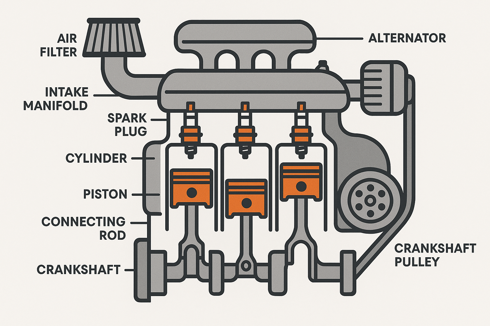

1 Introduzione
1.1 Il protagonosta del libro: Il test neuropsicologico
DA COMPLETARE
1.2 Filosofia di base
Per spiegare la filosofia alla base di questo libro utilizzerò una metafora a cui sono affezionato e che è stata utilizzata da Harald Baayen durante un corso di statistica a cui ho avuto la fortuna di partecipare nel 2008 ad Edmonton in Canada. Non ricordo esattamente le parole, ma il concetto era il seguente:
“utilizzare la statistica per la ricerca è come guidare un’automobile, non occorre capire come funziona il motore per utilizzarla bene, basta sapere cosa è giusto o cosa non è giusto fare.”

Detta da H. Baayen, grandissimo esperto di statistica, questa affermazione faceva sorridere gli studenti, ma era chiara: utilizzare i metodi statistici correttamente non implica necessariamente conoscere tutto ciò che sta al di sotto, ma capire cosa è corretto fare e cosa non è corretto fare. Nel corso degli anni ho però pensato che fosse utile aggiungere una seconda parte che la metafora in un certo senso, già implica.
“è vero che non serve conoscere come funziona il motore di un’automobile per saperla guidare, ma chi conosce bene come funziona il motore permette di sfruttarne meglio le potenzialità. Questo è ciò che accade per esempio per i piloti di formula 1”
Per tornare al nostro argomento (e cioè i metodi statistici per la neuropsicologia) già conoscere cosa è corretto e cosa è sbagliato fare in termini di utilizzo dei test in neuropsicologia clinica e forense è molto importante, ma una conoscenza più approfondita ci permette di utilizzarli meglio e di capire in quali situazioni ci possono essere problemi o situazioni particolari.
Nello scrivere questo libro ho realizzato che si puà aggiungere una terza parte alla metafora che mi sembra particolarmente pertinente.
“un pilota non è però un ingegnere o un meccanico che è in grado di montare e smontare un motore o addirittura di costruirlo. Ne conosce bene il funzionamento (più di una persona comune), per notare possibili problemi, come vibrazioni o rumori insoliti e aiutare a comunicare con il team, ma rimane pur sempre un utilizzatore, che deve concentrarsi su altre abilità, cioè quelle di guida”
Una cosa analoga avviene per la/il neuropsicologa/o: se conosce bene aspetti psicometrici ha conoscenze in più per capire quando un test non sta funzionando come deve o, in generale, ad interpretare correttamente il significato che hanno i numeri o classificazioni ottenute dall’utilizzo del test.